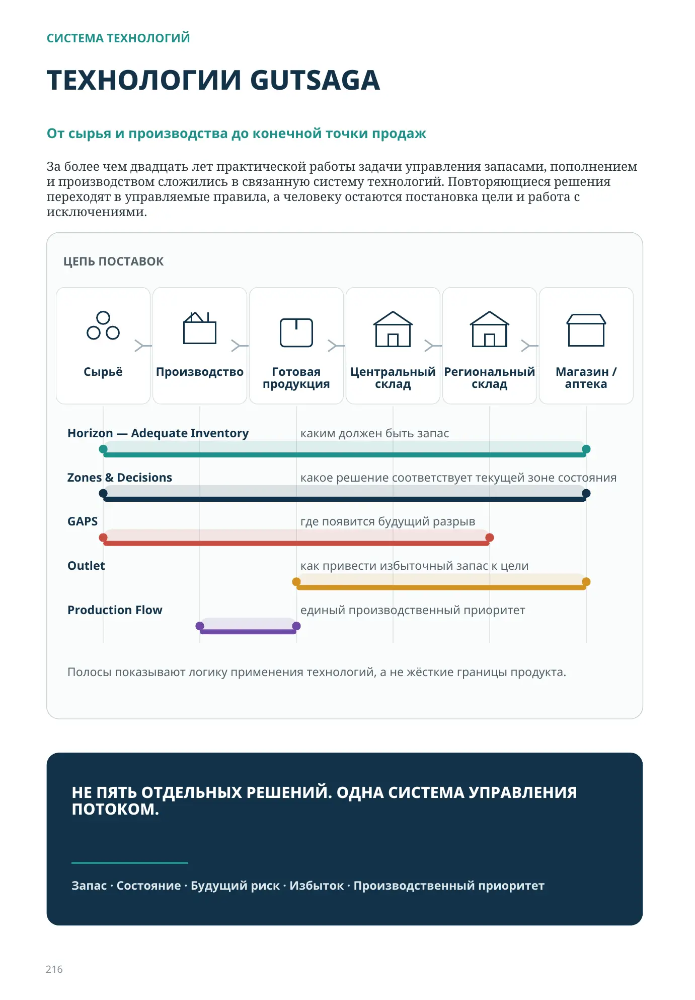

СИСТЕМА ТЕХНОЛОГИЙ
ТЕХНОЛОГИИ GUTSAGA
От сырья и производства до конечной точки продаж
За более чем двадцать лет практической работы задачи управления запасами, пополнением и производством сложились в связанную систему технологий. Повторяющиеся решения переходят в управляемые правила, а человеку остаются постановка цели и работа с исключениями.
- Сырьё
- Производство
- Готовая продукция
- Центральный склад
- Региональный склад
- Магазин / аптека
- Horizon — Adequate Inventoryкаким должен быть запас
- Zones & Decisionsкакое решение соответствует текущей зоне состояния
- GAPSгде появится будущий разрыв
- Outletкак привести избыточный запас к цели
- Production Flowединый производственный приоритет
Полосы показывают логику применения технологий, а не жёсткие границы продукта.